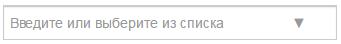
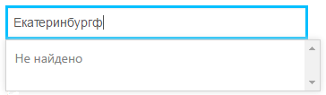
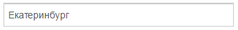
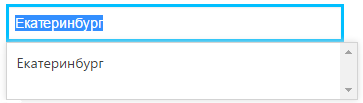

Автокомплит Autocomplete
Когда использовать
Автокомплит используют:
- для выбора значения из справочника,
- для добавления своего значения в справочник.
Используется автокомплит, если значений в справочнике слишком много, чтобы искать их глазами.
Автокомплит со стрелкой
Вид работыИспользуют для выбора одного значения из справочника. Стрелочка показывает, что поле работает по аналогии с раскрывающимся списком: при клике снизу появляется список всех вариантов. Строки могут подгружаться при прокрутке. Этот вариант автокомплита используют, если:
Контекст использования автокомплита тот же, что и у раскрывающегося списка. Его преимущество в том, что пользователь может ввести значение самостоятельно, и автокомплит найдет его в списке. Но тут есть и недостаток — нужно проверять введенные значения. |
Суть автокомплитаКонтекст использования автокомплита тот же, что и у раскрывающегося списка. Его преимущество в том, что пользователь может ввести значение самостоятельно, и автокомплит найдет его в списке. Но тут есть и недостаток — нужно проверять введенные значения. Чтобы заполнить такое поле, пользователь должен помнить первые буквы нужного значения, по которым автокомплит найдет подходящие варианты. |
Описание возможностей
Состояние по умолчаниюПлейсхолдер в поле говорит, что в поле можно ввести свое значение или выбрать его из списка вручную — «Введите или выберите из списка». Или же плейсхолдер указывает, какие типы значений можно вводить — «Начните вводить код или название». |
|
Фокус по пустому полюПри клике или получению фокуса плейсхолдер в поле становится чуть светлее, открывается список вариантов. Прокрутка должна быть сделана так, чтобы при достижении конца списка, не начинала прокручиваться сама страница. Так сделано, например, во ВКонтакте. |
По умолчанию список раскрывается вниз. Минимальная высота раскрывающегося списка 200 px, максимальная 450. Если снизу менее 200 px до конца страницы, список раскрывается вверх. |
Начало вводаСоздаетcя список вариантов, которые можно выбирать при наборе в текстовом поле. Изначально этот список скрыт и становится доступным при получении полем фокуса или наборе текста. |
При вводе первого символа список фильтруется. Оптимальное количество строк в списке — 5. После фильтрации список может быть очень большим, все результаты можно посмотреть с помощью скролла. Или уточнить запрос для сокращения поисковой выдачи |
Нет соответствий |
|
|
Если для введенного нет совпадений, об этом показывается текст: |

|
Потеря фокуса без выбора пункта из спискаЕсли ничего не найдено, показываем ошибку: |
Если найдено совпадение, то показываем его |
Сделан выбор
|
Фокус по заполненному полюПри получении фокуса поле ведет себя, как раскрывающийся список: введенное значение выделяется, раскрывается список, прокрученный до выбранного значения: |

|